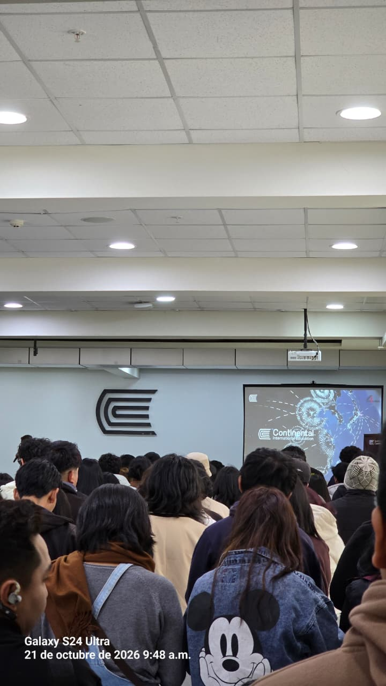
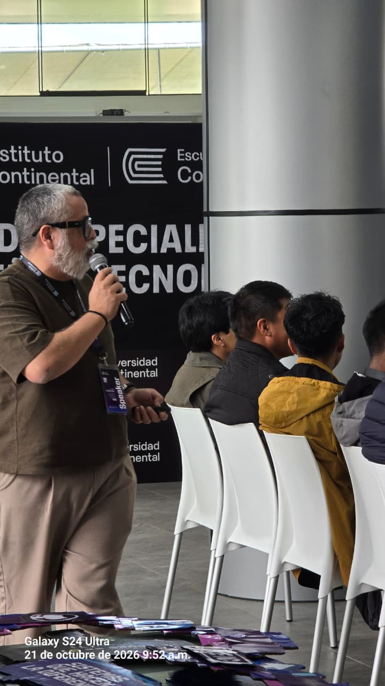
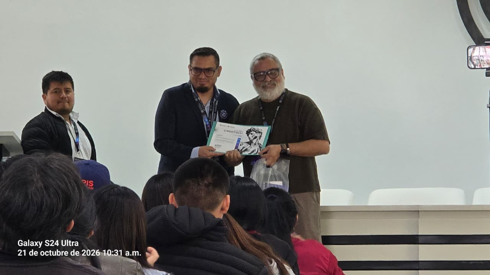
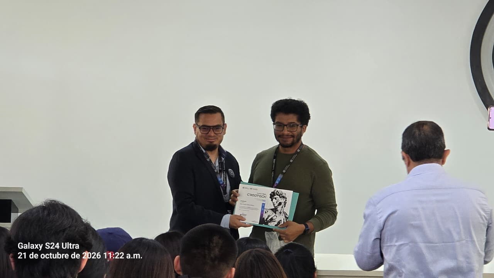
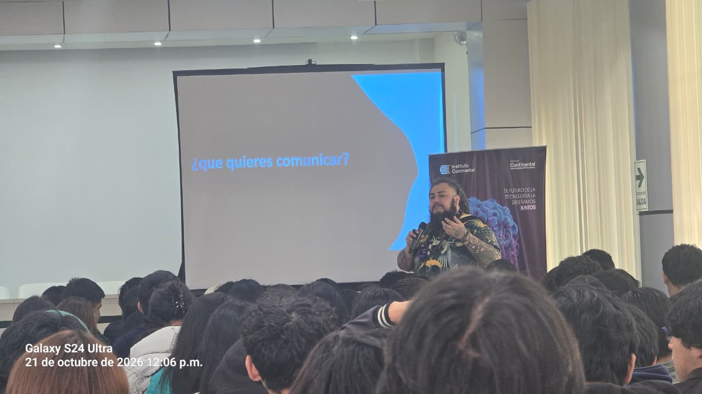
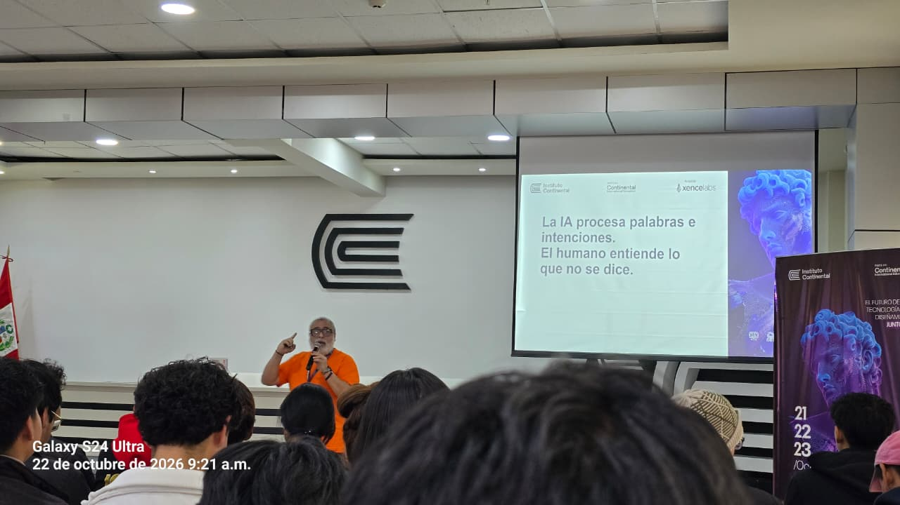

Plataforma integral de gestión analizada y diseñada por estudiantes del Instituto Continental para optimizar las operaciones técnicas y comerciales en Villa Perené.
Bajo la gerencia de Yuber Vicaña Mapele en Villa Perené, el establecimiento destaca por su especialización en reparación de hardware de celulares, microsoldadura de precisión, desbloqueo de dispositivos y venta. El objetivo del proyecto es estructurar lógicamente su atención diaria al cliente y su historial técnico.
El desarrollo se plantea sobre un entorno virtual de Python utilizando el framework Flask y SQLAlchemy. La persistencia de datos se diseña en MySQL (modelado en MySQL Workbench). Para el control de versiones se emplea Git, el código se estructura en Visual Studio 2022 y la interfaz emplea HTML, CSS y JavaScript.
Para agilizar el registro de clientes y comprobantes, la propuesta integra un módulo automatizado mediante APISPERU. Esto permite la validación instantánea y extracción de datos oficiales a partir de números de DNI y RUC, reduciendo el margen de error humano al momento de registrar una reparación o venta.
El sistema se encuentra estrictamente en fase de análisis, diseño y documentación. Se están planteando y proponiendo las bases arquitectónicas de la lógica de negocio antes del despliegue final.
La propuesta documenta detalladamente los protocolos de apertura diaria del local, asegurando que las interfaces estén listas para recibir y registrar a los clientes desde el primer minuto de atención.
La lógica se divide exclusivamente en tres áreas interconectadas: Ventas, Servicio Técnico y Caja. Se ha prescindido intencionalmente de un módulo de almacén aislado para garantizar un flujo directo.
Registro de nuestra presentación académica y el equipo de desarrollo de Sistemas de Información (Daniel, Jhonatan, Alizee y Alex).





